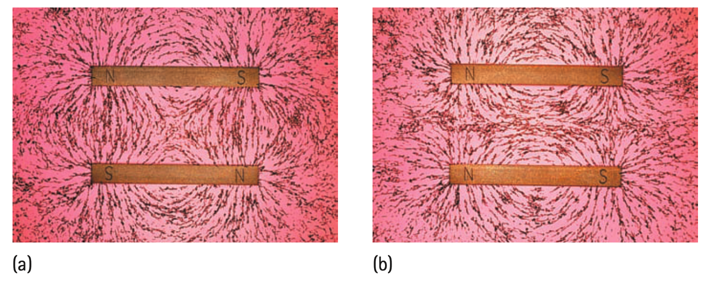

1. A compass needle is itself a tiny magnet. What two pole regions does it have?
2. State the interaction rule for like magnetic poles and for unlike magnetic poles.
3. What does closer spacing of magnetic-field lines indicate about the field?
4. Why does cutting a magnet not produce a north-only piece and a south-only piece?
5. How does a strongly magnetized piece of iron differ from ordinary iron in its domain alignment?
6. Use the two-panel field-pattern figure to compare what happens in the space between unlike-facing poles and like-facing poles. Describe one difference in the pattern.

7. Region A of a field diagram has tightly crowded lines; Region B has sparse lines. Rank the field strength and explain the model evidence.
8. A compass near a magnet rotates strongly, while a compass much farther away changes direction only slightly. What does this suggest about relative field strength?
9. An iron nail is stroked repeatedly with a magnet and then attracts paper clips. Explain the change using domain alignment rather than saying magnetism was “added.”
10. A student draws field arrows entering the north pole and leaving the south pole outside a bar magnet. Identify and correct the diagram error.
11. A student breaks a magnet and expects one fragment to contain only north behavior. Use the repeated-cutting evidence and a domain/pole model to explain why that prediction fails.
12. Two students disagree about field strength. One uses line spacing; the other uses arrow length that was drawn inconsistently. Decide which evidence is more defensible and justify the choice.
13. Which feature of a magnetic-field line tells direction?
14. A compass north end follows a field line outside a bar magnet generally from
15. Why are iron filings useful around a magnet?
16. Which domain picture best represents unmagnetized iron?
17. A piece of iron becomes more magnetic after many domains turn similarly. This process is called
18. What is the best prediction for two facing south poles?
19. A student draws field lines as physical strings tied to a magnet. What is wrong?
20. Which change most directly increases the net magnetization of a magnetic material?